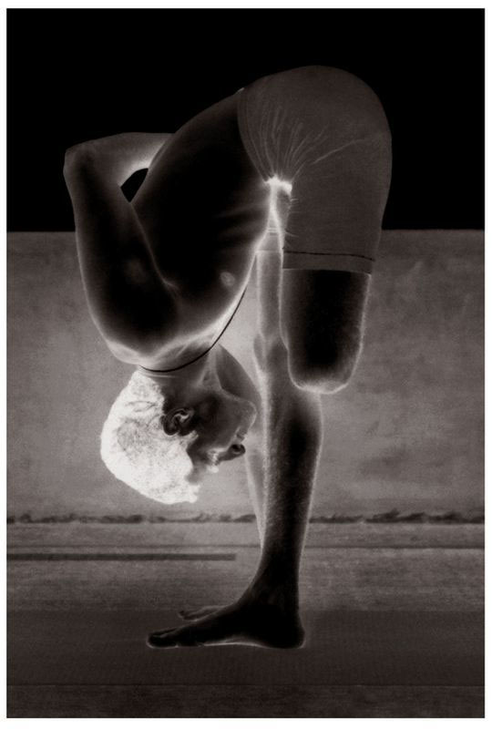

There are thirteen vinyasas in Utkatasana; the 7th vinyasa is its state. The vinyasa method described for the first Surya Namaskara is important to know for this asana.
METHOD
First, begin with the initial six vinyasas of the first Surya Namaskara. After the 6th vinyasa and doing puraka, jump into the 1st vinyasa of the second Surya Namaskara, and perform rechaka and puraka as much as possible; this is the 7th vinyasa. (Rechaka and puraka for the first six vinyasas must be performed in the same manner as in the first Surya Namaskara.) Then, doing rechaka and puraka, press the hands to the floor by the sides of the feet, put the whole weight of the body on the two hands, and lift the body up off the floor; this is the 8th vinyasa. Then, doing rechaka, throw the body back with the force of the arms, and hold the position, as in the 4th vinyasa of the first Surya Namaskara; this is the 9th vinyasa. Then, doing puraka, do the 5th vinyasa of the Surya Namaskara; this is the 10th vinyasa. Next, doing rechaka, do the 6th vinyasa of the Surya Namaskara; this is the 11th vinyasa. Then, doing puraka, do the 3rd vinyasa of the Surya Namaskara; this is the 12th vinyasa. Then, do the 2nd vinyasa of the Surya Namaskara; this is the 13th vinyasa. Then, Samasthiti.
ARDHA BADDHA PADMOTTANASANA

BENEFITS
Utkatasana increases the strength of the waist, which becomes slender, and makes the body light. It also prevents pain associated with the vertebral column.
THE VINYASA METHODS FOR THE FIRST NINE ASANAS HAVE NOW BEEN described. The vinyasas of the asanas that follow begin as they do for the first six vinyasas of the first Surya Namaskara. Then, from the 7th vinyasa on, the vinyasas, as well as rechaka and puraka, prescribed for respective asanas differ. I will try to describe the differences as much as possible as they occur.
Again, no asana should be performed without following the proper method of vinyasa. If this is ignored, the organs of the body may not develop, fat may not be reduced, and the body could grow ill. In addition, some organs may strengthen, while others become weak, or an organ that was meant to be strengthened may weaken instead. In addition, if there is no steadiness in the movements of rechaka and puraka, then the balance of the heart could be upset, which could weaken it. When this occurs, the nadis become spoiled, and when they spoil, all parts of the body are weakened. Therefore, asanas and the like (puraka, rechaka, etc.) should be practiced following the methods of vinyasa, which is best learned from a Guru experienced in yoga shastra. I consider it my earnest duty to caution the reader and aspirant not to try to learn these methods from books, reflections [photos], or pseudo-yogis.
Hereafter, vinyasa methods are not dealt with deeply. Instead, only the state of an asana, vinyasa, and their benefits are described. However, should something special come up, I will describe it.